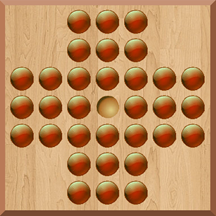
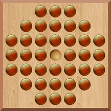
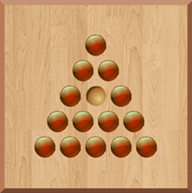

What is Peg Solitaire?
Peg Solitaire is a one player board game in which the player moves pegs on a board to try to end with only one peg remaining. There are many variations of the game such as different board types and different positioning of the pegs. The game goes by different names in different parts of the world. For example, this game is also known as Hi-Q.
The game dates all the way back to the 17th century when it was played on a wooden board with drilled holes that the pegs could be placed in. It is often said that the game was invented by a French aristocrat, but there is no clear evidence as to who actually invented the game.
Some of variations of board types include:

The Cross (English) Board

The Octagon (French) Board

The Triangle Board